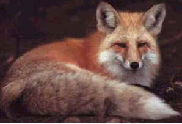
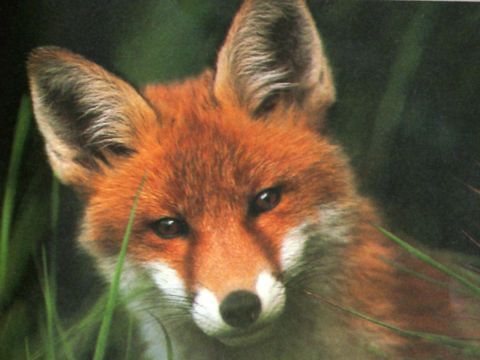

VOLPE ROSSA (RED FOX)

| Climate/Terrain | Colline, montagne, pianure e foreste non artiche |
| Frequency | Uncommon |
| Organization | Solitary |
| Activity Cycle | Any |
| Diet | Carnivoro |
| Intelligence | Semi (3 - 4) |
| Treasure | Nessuno |
| Alignment | Neutral |
| No. Appearing | 1 |
| Armor Class | 5 |
| Movement | 15 |
| Hit Dice | 1 |
| Thac0 | 19 |
| No. of Attacks | 1 Morso |
| Damage / Attacks | 1d4 |
| Special Attacks | Nessuna |
| Special Defenses | Nessuna |
| Magic Resistance | Nessuna |
| Size | Small |
| Morale | Steady (12) |
| XP value | 15 |
Descrizione
La volpe presenta zampe relativamente corte ed una folta coda. Le dimensioni corporee variano notevolmente a seconda delle razze e degli ambienti potendo arrivare ad una dimensione di quasi 1 metro con una coda che misura dai 30 ai 40 cm. Il peso medio varia dai 5-8 kg. Il colore dominante della parte superiore del corpo è fulvo bruno tendente al rossastro; la base delle orecchie e i lati del corpo sono grigiastri, mentre le parti inferiori sono biancastre; la coda è rossastra con l’estremità bianca.
Combat
La volpe non ha penalità a combattere di notte o nelle zone buie purché non si tratti di buio assoluto. La volpe è un animale straordinariamente scaltro e intelligente.
Habitat/Society
La volpe è un animale territoriale e solitario, anche se talvolta si riunisce in piccoli gruppi sociali. Nonostante sia una specie crepuscolare e notturna, essa può essere attiva di giorno laddove non sia particolarmente disturbata. L'elevata adattabilità della volpe è evidente nella dieta: può, infatti, nutrirsi di Roditori, lepri, conigli, Uccelli, Anfibi, Rettili, ma anche di alcuni Invertebrati; non sono esclusi bacche e frutti. La volpe è estremamente adattabile a qualsiasi condizione ambientale. Vive al massimo 12 anni.
Ecology
La volpe è molto ricercata per la sua pelliccia. La sua pelliccia può valere da 1 a 2 g.p..
